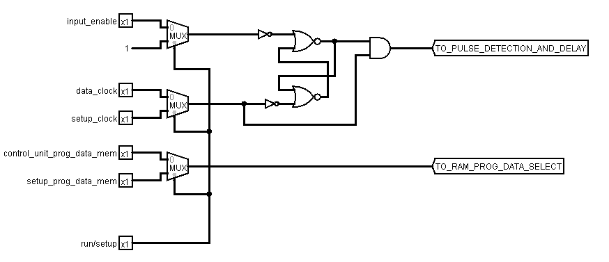

RAM¶
The RAM provides 256 bytes of program memory (instruction bytes) and 256 bytes of data memory (global variables and the stack).
Interface and Operation¶
This is the interface of the RAM:

This is how it operates:
| Name | Bit width | Description |
|---|---|---|
| input_enable | 1 | While high, the data on data_in will be stored at the currently selected address on a rising clock edge. |
| output_enable | 1 | While high, the RAM asserts the data at the currently selected address onto data_out. |
| data_clock | 1 | Clock signal from the clock module (data_clock). |
| setup_clock | 1 | Clock signal from the manual setup switch. |
| run_setup | 1 | When low, the RAM is in setup mode, when high, run mode. |
| control_unit_select_data_memory | 1 | Program/data memory selection switch from the control unit. |
| setup_select_data_memory | 1 | Program/data memory selection switch from the manual setup switch. |
| data_in | 8 | Data to be stored is read from here. |
| data_out | 8 | Data at current address is output here. |
| address | 8 | Index in memory to read from or write to. |
Implementation¶
Combined Input/Output pins¶
Unlike the 74LS189 chip that Ben Eater uses for his RAM, the 6116SA used in this computer has combined input and output pins. This means that care is required not to apply signals to those pins at incorrect times. A tri state buffer is used on the input to achieve this. The connections from the input/output pins on the RAM chip and the 74HCT245 tri state buffers are arranged like this:

Timing for Safely Writing Data¶
Most of the time the RAM chip is in read mode. This means that the chip is asserting the data stored in the address currently specified on the address pins to the input/output pins. When it’s time to write, the chip needs to switch to write mode. To simplify control circuitry, only the write enable (active low) input on the 6116SA is used to control switching between read and write mode (output enable (active low) is available on the chip as well).
It takes time for the chip to switch modes and the pins to change from output to input. This time is referred to as tWHZ in the data-sheet and the following note applies:
Note
- During this period, the I/O pins are in the output state and the input signals must not be applied.
According to the data-sheet tWHZ is at most 7ns for the 6116SA15 being used.
As well as the time taken for the pins to change state, we need to ensure that the overall write pulse width is a certain length due to another note in the data-sheet (which applies because _OE will indeed be low):
Note
- _OE is continuously HIGH. If _OE is LOW during a _WE controlled write cycle, the write pulse width must be the larger of tWP or (tWHZ + tDW) to allow the I/O drivers to turn off and data to be placed on the bus for the required tDW. If _OE is HIGH during a _WE controlled write cycle, this requirement does not apply and the write pulse is the specified tWP. For a _CS controlled write cycle, _OE may be LOW with no degradation to tCW.
tWP is listed as 12ns, but tWHZ + tDW (7ns + 12ns) is greater at 19ns so the write pulse needs to be at least that long.
The chip is also not edge triggered - it will write data to the specified address as long as it is in write mode. This means that we need to do our own edge detection and keep the write pulse as short as possible. See the Edge Detection section for more details.
Once the write is finished, the chip can go instantly back into read mode (as tDH is 0ns).
So with all this in mind, this is how the desired control signals would look (assuming a write is to take place).

The output enable on the 74HCT245 and write enable on the 6116SA are active low so the final circuit looks like this:

(This can be seen in Falstad Circuit Simulator by loading the
saved session)
From left to right:
- The capacitor, resistor and inverting Schmitt trigger on the bottom form the edge detector that produces a low pulse when a rising edge is detected.
- The three inverting Schmitt triggers on top serve to delay and invert the clock signal (using propagation delay).
- The two OR gates ensure that once the low pulse from the detected rising edge finishes, both control signals go high at the same time.
The propagation delay of the inverting Schmitt triggers (inside a 74HCT14) is approximately 20ns, to a maximum of approximately 40ns. With the 3 Schmitt triggers on top, the inversion of the now positive clock is delayed between 60ns and 120ns.
The resistor and capacitor values are chosen so that the time from the voltage between the capacitor and the resistor going high, to the voltage going below the negative going threshold of the Schmitt trigger is at least 112ns. That is:
- 120ns for the longest possible delay for the top three Schmitt triggers.
- Subtract 20ns for the shortest propagation delay from the edge detect Schmitt trigger.
- 12ns to satisfy tDW
The 7ns required for tWHZ is amply catered for by the chained Schmitt triggers.
The final control signals look like this:

Run/Setup Mode¶
The RAM needs to accessed by the computer while running (run mode) and by the user during setup (setup mode). To achieve this, the follwing inputs to the RAM all need to be driven by either the computer itself, or the user:
- data_in
- address
- input_enable
- select_data_memory
- clock
The run_setup switch decides which input will be fed to the RAM.
data_in and address are connected to 2:1 Selectors.
The remaining input_enable, prog_data_mem_select and clock are all connected to a 74HCT157 Quad 2 to 1 line data selector. They are set up as follows:
{kind=link}
From left to right:
- Multiplexers to select between run and setup control signals
- Safe Clock Enable
- Outputs to the rest of the RAM.
When in run mode:
- data_in - connected to the bus.
- address - connected to the output of the memory address register.
- input_enable - connected to ram_in from the Control Unit.
- select_data_memory - connected to ram_sel_data_mem from the Control Unit.
- clock - connected to data_clock from the Clock.
When in setup mode, all of the above are connected to switches that the user controls, apart from input_enable which is held high.
Hardware¶
The following electronics are used:
- A 6166SA15 RAM chip to hold all the data.
- 2 x 74HCT245 for controlling input and output to and from the RAMs IO pins.
- A 74HCT157 to choose between the inputs in run and setup mode.
- A 74HCT02 containing NOR gates to build the Safe Clock Enable.
- A 74HCT08 containing AND gates to build the Safe Clock Enable and isolate the resistor and capacitor circuit from the other logic gates.
- A 74HCT14 containing Schmitt triggers to edge detect and delay the clock.
- A 74HCT32 for the OR gates that are used in the edge detection and delay circuit.
They are laid out on the breadboards as follows: